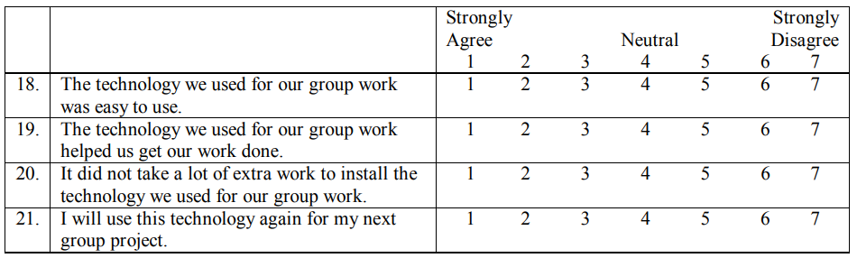

- What is your gender? (circle one) male female
- In which age group do you fall? (circle one) 21-25 26-30 31-35 36-40 41-45 46-50 50+
- How many semesters (including this one) have you been in the UCCS MBA program? ______
- How many MBA courses have you taken (including this semester)? ________ courses
- If you have a job, how many hours do you work each week? _______ hours/week
- How many hours do you spend each week on your MBA work? ______ hours/week
- If you have one, what is your area of emphasis? _______________
- What is your current GPA? _________
- Some classes require a major group project. How many of these major group project teams have you been on (all MBA classes, including this semester)? __________ teams
- Did the instructor assign groups or did the students pick their own group? (circle one) instructor assigned student assigned
- On average, how many hours did you spend with your group each week? _______ hours/week
- On average, how many meetings did your group hold each week? _________ meetings/week
- On average, what percentage of your meetings was spent on socializing? ________ %
- On average, what percentage of your meetings was spent on the project task? ________ % Total 100%
- Not including the groups that were assigned to complete the group project requirements, did you form any group(s) with other students in the class? (indicate by placing an X in the appropriate line) ______ Yes, it had _______ members ______ No, I did not form any other groups
- At what point during the course did you feel comfortable?
- At what point during the course did you first ask non-trivial questions of fellow students or the instructor (e.g. clarification or administrative questions about the syllabus would be considered trivial whereas content-oriented questions for fellow students or the instructor would be considered non-trivial)?
- 22. What was the name of the technology(ies) that you used? (please list all technologies)
You may have had a group project in IS619. If so please answer questions 10 – 14 relating to your experience with your group. If you did not have a required group project, please continue with question 16.
For the purpose of this survey, we break down the time spent in meetings as time spent on socializing, and time spent working on the assigned task. For questions 13 and 14 please indicate the percentage of time spent on socializing and the time spent on task. The two percentages should total 100%.
It can sometimes take some time before a student feels comfortable with the complexity encountered in a particular class. The following are some of the things included in our definition of feeling comfortable: believing you can meet the expectations outlined for the course; feeling you can ask a fellow student or the instructor for help; following the lectures and participating in the discussions.
You can accomplish group work in a same-place environment (face-to-face) or at a distance (group members do not meet face-to-face). Questions 17 – 21 refer to the technology (i.e. email, telephone) you used to do group work at a distance. Referring to the scale (1 = strongly agree, 4 = neutral, 7 = strongly disagree), circle the appropriate response. If you always met face-to-face please skip ahead to question 22.
Using your group experience in this course, please indicate your level of agreement with questions 22 – 39 below. Please refer to the scale ( 1 = strongly agree, 4 = neutral, 7 = strongly disagree ) and circle the appropriate response.

Chapter VIII
Online Courses: Strategies for Success
Linda Cooper Macon State College, USA
A number of post-secondary institutions are looking more seriously at offering online courses to meet the educational needs of a fast-paced, computer-literate society.
In 1998, Macon State College (MSC) began offering an online Business Computer Applications course, and since its inception, approximately 250 students have enrolled in the 16-week (one-semester) course. Business Computer Applications provides instruction in basic computer concepts and terminology as well as instruction using the software program, Microsoft Office. It is one of the core courses required of all business majors; however, many other students also enroll in the class.
This chapter provides instructors who are interested in offering online classes with various strategies used and found successful in the instruction of an online Business Computer Applications course. Topics such as the importance of an initial class meeting, providing diverse instructional materials, the value of student course evaluations, and the dilemma of student assessment procedures will be addressed
Although a course management system (CMS) is used to manage the online Business Computer Applications course discussed in this chapter, many of the procedures incorporated can be effective in the facilitation of any online course. The advantages of using a CMS to implement and manage online courses will also be discussed later in this chapter.
INTRODUCTION
With working adults becoming an increasingly large percentage of the college population and with greater numbers of students having computer and Internet experience prior to entering college, a number of post-secondary institutions are looking more seriously at offering online instruction to meet students’ educational needs.
With working adults becoming an increasingly large percentage of the college population and with greater numbers of students having computer and Internet experience prior to entering college, a number of post-secondary institutions are looking more seriously at offering online instruction to meet students’ educational needs.
This chapter provides instructors who are interested in offering online classes with various strategies used and found successful in the instruction of an online Business Computer Applications course. Topics such as the importance of an initial class meeting, providing diverse instructional materials, the value of student course evaluations, and the dilemma of student assessment procedures will be addressed.
Although a course management system (CMS) is used to manage the online Business Computer Applications course discussed in this chapter, many of the procedures incorporated can be effective in the facilitation of any online course. The advantages of using a CMS to implement and manage online courses will also be discussed later in this chapter.
PLANNING THE ONLINE COURSE
Online instruction can be offered in a variety of formats, and the process selected by instructors will depend on such factors as whether they are encouraged and supported by the administration, have the technological infrastructure available at their school to support online instruction, have access to technical support, or have technical knowledge and expertise themselves.
Once a decision is made regarding the technological format that will be used, the instructor can begin with the course design and planning and developing the course. During the planning stage, it is important that the instructor define course goals and objectives, identify interaction procedures to be used in the class, decide on instructional materials or course content, and determine how the course content will be organized and made available to students online (Cooper, 1999).
Implementation considerations by the instructor include such decisions as how to introduce students to the logistics of online learning, how to evaluate students on their understanding of course content and achievement of course objectives, how students will evaluate the effectiveness of online instruction, and how to continually improve the online course and the online learning process (Cooper, 1999).
Business Computer Applications Background
In 1998, Macon State College (MSC) began offering an online Business Computer Applications course, and since its inception, about 250 students have enrolled in the 16-week (one-semester) course. Approximately 20-25 students enroll in each of the online sections of the course. By limiting the number of students in the course, the instructor is better able to interact with all class members and will minimize the need for logistical support.
Business Computer Applications provides instruction in basic computer concepts and terminology as well as instruction using the software program, Microsoft Office. It is one of the core courses required of all business majors; however, many other students also enroll in the class.
In the past, the course has been taught only in the traditional format. Class activities included instructor lecture, student discussion, instructor demonstration, hands-on computer activities, etc., and although numerous sections of the class are still taught in this traditional format, online sections are offered as well. The online classes provide those students who may already be familiar with the course material, who find it difficult to attend classes on campus because of work or home scheduling conflicts, or who are motivated and able to manage their time effectively the opportunity to complete the class somewhat independently.
ewhat independently. Enrollment in the online Business Computer Applications course requires that students have a 2.5 grade point average, Internet access, and access to a computer equipped with Microsoft Office software. Online students attend an initial class meeting or orientation session, during which they meet the instructor and each other and have the opportunity to ask questions.
Because the course provides instruction in theory (computer theory and concepts) and computer software applications (Microsoft Office), two textbooks are used. The theory book contains eight chapters and covers topics such as the history of computing; the design, function, and relationships between internal components of a computer; how data is processed and stored internally and externally; the effect of computers on society; and how to purchase computer hardware and software. Students are responsible forapproximately one chapter per week and are tested after every two chapters.These exams are generally objective in nature, administered online, and graded automatically. Students take them on an assigned day but at a time convenient to them. When finished with the exams, students can see the correct answer to each of the questions, as well as their test grade. Students also take a comprehensive final exam over the theory textbook.
The Microsoft Office textbook is divided into six sections. Students learn how to work and manage files in the Windows environment (one-two weeks); how to use the Internet for communicating and research (one week); and how to use the software applications, Microsoft Word, Microsoft Excel, Microsoft Access (three weeks each), and Microsoft PowerPoint (one week). To help them with learning each of the applications, they have a CD-ROM tutorial and access to online videos in addition to step-by-step instructions provided in the textbook.
Students report to campus three times during the semester to take tests over the software applications. They are also required to research a business technology topic using the Internet and then write a research paper and create a PowerPoint presentation on that topic.
Student Profile
During the 1999-2000 academic year, the average student enrolled in the online Business Computer Applications course was 27 years in age, female (61%), and employed. In fact, of the online students, 56% were employed fulltime, 28% were employed part-time, and 16% were unemployed. In most cases, the unemployed student was a stay-at-home mother with children.
In comparison, the average student enrolled in the traditional class during the 1999-2000 academic year was 23 years of age, also female (64%), and employed part-time. Of traditional students, 66% were employed part-time, 33%were employed full-time, and 7% were unemployed. Thus, the biggest difference between students enrolled in the online class and the traditional class was employment status (Cooper, 2001).
Because online learning is a new experience for most students, an initial class meeting is beneficial. It provides an excellent opportunity for students to meet the instructor and each other, ask questions, and become acquainted with course logistics (Cooper, 1999). Students also need to be aware of the hardware and software that they will need as well as the level of computing proficiency required (Hanna et al., 2000).
During the class meeting, it is helpful to go over information typically covered the first day of a regular class such as syllabus, textbook, instructor office hours, testing procedures, etc. In addition to the syllabus, one of the most beneficial handouts to both students and the instructor is the semester calendar (also available online), which includes a timeline or schedule of activities, assignments, and test dates for each week of the semester. Not only does the schedule provide students with a weekly “to do” list, but it also reminds students of their learning objectives and keeps both the students and the instructor on task.
The initial meeting also furnishes students with an explanation of what an online course is, the role of the instructor in the online classroom, student expectations, and the mechanics of how “everything works.” Because the instructor has access to the student roster prior to this meeting, it is advantageous to enter all user names into the system beforehand. Doing so allows students during this class session to log on with their assigned user name and password and actually navigate the course website and become familiar with the content and the various online features.
The opportunity for students to actually log onto the course website and become familiar with it helps answer any questions they might have and alleviates any anxieties that they might be experiencing. An introduction to the online course content can also prevent students when later working on their own from wasting time and becoming “frustrated with the system to the point where they abandon it and any subsequent attempts to master its content” (Bayram, 1999).
Given that the majority of problems students encounter are computerrelated, it is also helpful to spend time during the initial class meeting demonstrating proper installation of the tutorial CD-ROM, downloading and installing video player software, running a PowerPoint presentation on the Internet, and sending and receiving attachments.
Since students tend to forget some of the information presented during the session, a “FAQ” or “frequently asked questions” link is added to the course homepage. This page provides answers to such questions as “How do I send an attachment?” “How do I install course software?” and “How do I get started in the course?” Should they need additional assistance with any of these operations, students are encouraged to visit the campus lab or contact the instructor.
It is also helpful during the initial class session to have students complete a survey or profile sheet. The information provided by them can be helpful in determining their learning needs and for providing them with diverse instructional materials. It can also help students assess their readiness for onlinelearning (Hanna et al., 2000).
In addition, because students who miss the orientation session are more likely to drop the course, the entire session is videotaped and made available to them—both in the library and online.
When it is not possible to provide an initial class meeting for an online class, other strategies can be utilized. Prior to the beginning of class, the instructor can send students a letter or email introducing him/herself, welcoming students to the class, furnishing them the URL or online course website address, providing instructions for accessing the online learning materials, and highlighting specific online features or Web pages. Although the syllabus and course schedule are both provided online, it is helpful to also include them with the letter.
this first written communication, it is also helpful if students are asked to communicate with the instructor during the first week of class either through email or telephone to ensure that they understand the content organization and their expectations as online students.
Online Communication
Instructor-Student Communication
To maintain regular instructor-student communication, it is beneficial to send students a class announcement every week that provides an overview of the upcoming week’s activities, provides any additional information or explanations about course content or assignments, reminds them of test dates, and addresses any student concerns expressed to the instructor during the previous week.
To encourage discussion of course content and interaction of ideas in the Business Computer Applications course, the instructor posts content-related topics regularly. Discussion questions should require thought, problem solving, and/or research but should be brief, as students are more likely to participate if the topic is concise and does not require lengthy responses. Participation is a part of the students’ final grades, and although they are graded on the frequency of their participation, they are also graded on the quality of their input. Extra credit points are given to students who take the initiative to begin their own discussion of ideas and/or opinions.